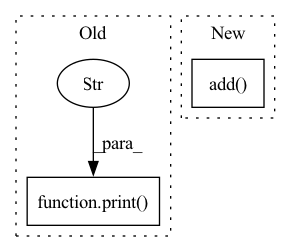

Pattern ID :9981
Before Change
**kwargs):
print("vector layer")
super().__init__(**kwargs)
print("after init" )
self.num_values = num_values
self.value_func = value_func
// Make the vector
self.vector_label = self.make_vector()After Change
self.value_func = value_func
// Make the vector
self.vector_label = self.make_vector()
self.add( self.vector_label)
def make_vector(self):
Makes the vector
if False:In pattern: SUPERPATTERN
Frequency: 7
Non-data size: 2
Instances Fragment ID: 35623999
Project Name: helblazer811/manimmachinelearning
Commit Name: ffd31701bfa54f0a4ed481b9735494f9477b5ccf
Time: 2022-04-21
Author: alechelbling1@gmail.com
File Name: manim_ml/neural_network/layers/vector.py
M Class Name: VectorLayer
N Class Name: VectorLayer
M Method Name: __init__(3)
N Method Name: __init__(3)
M Parent Class: VGroupNeuralNetworkLayer
N Parent Class: VGroupNeuralNetworkLayer
M File Name: manim_ml/neural_network/layers/vector.py
N File Name: manim_ml/neural_network/layers/vector.py
M Start Line: 11
M End Line: 13
N Start Line: 15
N End Line: 16
Before Change
shp = norm.shape + (1,) * (node_feat.dim() - 1)
norm = th.reshape(norm, shp)
node_feat = node_feat * norm
print("Norm Feature Succeed" )
graph_data = (graph, labels, tr_label_idx, val_label_idx, test_label_idx, node_feat)
return graph_data
After Change
def load_dgl_graph(base_path):
graphs, _ = dgl.load_graphs(os.path.join(base_path, "graph.bin"))
edge_feat = th.cat((minMaxScaling(graphs[0].in_degrees().unsqueeze_(1).float().add( 1) .log()),
minMaxScaling(graphs[0].out_degrees().unsqueeze_(1).float().add(1).log())), dim=1)
graph = graphs[0] Fragment ID: 35623997
Project Name: langgege-cqu/maxp_dgl
Commit Name: 5f428bb0d6bfb9dad16f32ca3d65785469b69c00
Time: 2021-12-11
Author: 8747734+bugczw@user.noreply.gitee.com
File Name: maxp_model_czw/unimp/util.py
M Class Name: AnonimousClass
N Class Name: AnonimousClass
M Method Name: load_dgl_graph(1)
N Method Name: load_dgl_graph(2)
M Parent Class:
N Parent Class:
M File Name: maxp_model_czw/unimp/util.py
N File Name: maxp_model_czw/unimp/util.py
M Start Line: 8
M End Line: 52
N Start Line: 13
N End Line: 47
Before Change
loss += loss_metric.get()[1]
metric.update(label, outputs)
print("validation acc: %s=%f" % metric.get())
print("validation loss:" , loss)
accuracy = metric.get()[1]
return loss, accuracy
After Change
loss_metric = mx.metric.CrossEntropy()
metrics = mx.metric.CompositeEvalMetric()
for child_metric in [accuracy_metric, loss_metric]:
metrics.add( child_metric)
val_data.reset()
num_examples = 0
for batch in val_data:
data = gluon.utils.split_and_load(batch.data[0], ctx_list=DEVICE, batch_axis=0) Fragment ID: 35623996
Project Name: adap/flower
Commit Name: 791af3e9c985dd547a33fc1d1c72e6eb878daf0e
Time: 2021-03-12
Author: 69673117+mariaboerner1987@users.noreply.github.com
File Name: examples/quickstart_mxnet/client.py
M Class Name: AnonimousClass
N Class Name: AnonimousClass
M Method Name: test(2)
N Method Name: test(2)
M Parent Class:
N Parent Class:
M File Name: examples/quickstart_mxnet/client.py
N File Name: examples/quickstart_mxnet/client.py
M Start Line: 106
M End Line: 124
N Start Line: 114
N End Line: 132
Before Change
data_path = os.path.join(os.path.dirname(__file__), os.environ.get("JINA_DATA_FILE", None))
//import glob
with f, open(data_path) as fp:
print(f"type: {type(fp)}" )
print(f"lines: {type(np.array(fp.readlines()))}")
d = Document.from_ndarray(np.array(fp.readlines()))
num_docs = min(num_docs, len(fp.readlines()))
with TimeContext(f"QPS: indexing {num_docs}", logger=f.logger):After Change
def index(num_docs):
//f = Flow.load_config("flows/index.yml")
f = Flow().add(uses=MyTransformer).add(uses=NumpyIndexer)
data_path = os.path.join(os.path.dirname(__file__), os.environ.get("JINA_DATA_FILE", None))
with f, open(data_path) as fp:
d = DocumentArray.from_ndarray(np.array(fp.readlines())) Fragment ID: 35623994
Project Name: jina-ai/examples
Commit Name: 5a64b61e836d0126f174b465dbe6ce30c0dbba61
Time: 2021-05-21
Author: zhuoran2@andrew.cmu.edu
File Name: wikipedia-sentences/app.py
M Class Name: AnonimousClass
N Class Name: AnonimousClass
M Method Name: index(1)
N Method Name: index(1)
M Parent Class:
N Parent Class:
M File Name: wikipedia-sentences/app.py
N File Name: wikipedia-sentences/app.py
M Start Line: 37
M End Line: 55
N Start Line: 40
N End Line: 75
Before Change
filePath=Path(project.testsPath, f"test_{dataModel.className.asFileName}")
)
print("" )
print(f"Class {dataModel.className} was created.{project.modeMessage}")
print("")
if project.isDryRun:After Change
dataModel.process_inputs(value)
content = (
DataModelRenderer()
.add("from typing import List ", dataModel.isListDependent)
.add("from datetime import {0} ", sorted(list({m.type_ for m in dataModel.conversions if m.isTemporal})))
.add("from hypergol import BaseData ")
.add("from data_models.{snake} import {name}", [{"snake": m.type_.asSnake, "name": m.type_} for m in dataModel.conversions if not m.isTemporal and not m.isObject])
.add(" ")
.add(" ")
.add("class {className}(BaseData): ", className=dataModel.className)
.add(" ")
.add(" def __init__(self, {arguments}): ", arguments=", ".join(dataModel.arguments))
.add(" self.{0} = {0} ", dataModel.names)
.add(" ", len(dataModel.ids) > 0)
.add(" def get_id(self): ", len(dataModel.ids) > 0)
.add(" return ({idString}, ) ", len(dataModel.ids) > 0, idString=", ".join(dataModel.ids))
.add(" ", len(dataModel.conversions) > 0)
.add(" def to_data(self): ", len(dataModel.conversions) > 0)
.add(" data = self.__dict__.copy() ", len(dataModel.conversions) > 0)
.add(" data["{name}"] = BaseData.to_string(data["{name}"]) ", [{"name": m.name} for m in dataModel.conversions if m.isObject])
.add(" data["{name}"] = data["{name}"].{conv}() ", [{"name": m.name, "conv": m.to_} for m in dataModel.conversions if not m.isList and not m.isObject])
.add(" data["{name}"] = [v.{conv}() for v in data["{name}"]] ", [{"name": m.name, "conv": m.to_} for m in dataModel.conversions if m.isList])
.add(" return data ", len(dataModel.conversions) > 0)
.add(" ", len(dataModel.conversions) > 0)
.add(" @classmethod ", len(dataModel.conversions) > 0)
.add(" def from_data(cls, data): ", len(dataModel.conversions) > 0)
.add( " data["{name}"] = BaseData.from_string(data["{name}"]) ", [{"name": m.name} for m in dataModel.conversions if m.isObject])
.add(" data["{name}"] = {type_}.{conv}(data["{name}"]) ", [{"name": m.name, "type_": str(m.type_), "conv": m.from_} for m in dataModel.conversions if not m.isList and not m.isObject])
.add(" data["{name}"] = [{type_}.{conv}(v) for v in data["{name}"]] ", [{"name": m.name, "type_": str(m.type_), "conv": m.from_} for m in dataModel.conversions if m.isList])
.add(" return cls(**data) ", len(dataModel.conversions) > 0)
).get() Fragment ID: 35623992
Project Name: hypergol/hypergol
Commit Name: 0d5ad3a83efc4af804e0617ca7909ea49b2a76a9
Time: 2020-08-10
Author: sragner@gmail.com
File Name: src/hypergol/cli/create_data_model.py
M Class Name: AnonimousClass
N Class Name: AnonimousClass
M Method Name: create_data_model(1)
N Method Name: create_data_model(1)
M Parent Class:
N Parent Class:
M File Name: src/hypergol/cli/create_data_model.py
N File Name: src/hypergol/cli/create_data_model.py
M Start Line: 100
M End Line: 150
N Start Line: 109
N End Line: 154